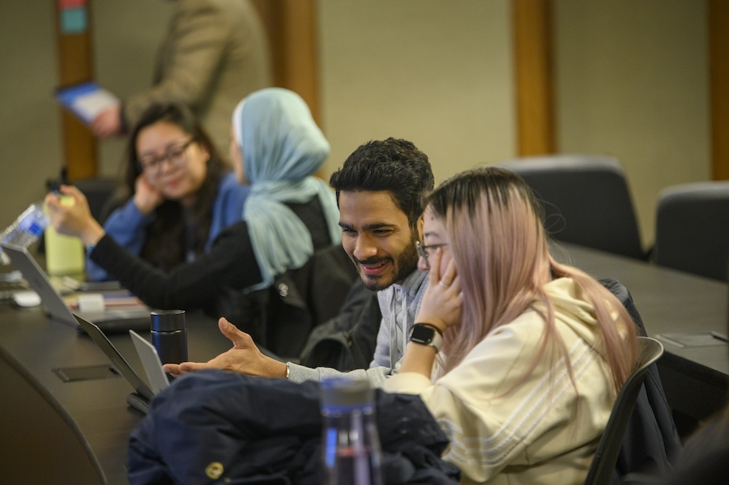

UMSI Tutoring & Academic Support
The Academic Success Team at UMSI is dedicated to supporting students inside and outside of the classroom. This site is dedicated to connecting students to tutoring and academic support resources.
Resources
- Programming Peer Tutoring
- Math Peer Tutoring
- Additional Academic Support Resources
UMSI Programming Peer Tutoring
UMSI offers Programming Peer Tutoring for both SI and SIADS courses, covering subjects like Python, data analysis, and more. Tutors bring their own unique expertise in areas such as big data, machine learning, and data visualization. You can book an appointment to receive personalized support in courses like SI 106, SI 206, SI 506, SI 507, and SIADS 505. For additional questions, contact umsi.academicsuccess@umich.edu or check individual tutor booking links.
UMSI Math Peer Tutoring
UMSI provides Math Peer Tutoring for both SI and SIADS courses, offering support in subjects like linear algebra, statistics, and general math concepts. Tutors specialize in areas such as data analysis, visualization, and advanced mathematics, with experience in courses like SI 425, SI 370, SI 330, and SIADS 502. For additional questions, contact umsi.academicsuccess@umich.edu or explore individual tutor booking links.
Additional Academic Support Resources
UMSI offers a range of academic support resources beyond peer tutoring, including the Sweetland Writing Center, English Language Institute, LS&A Math Lab, and Services for Students with Disabilities.
- The Sweetland Writing Center provides one-on-one tutoring and courses for undergraduate and graduate students, including multilingual support.
- The English Language Institute offers English for Academic Purposes courses and GSI preparation.
- The Math Lab provides free tutoring for math courses through 217 and attempts to assist with other math questions.
- SSD ensures an inclusive educational environment for disabled students. For more details, contact umsi.academicsuccess@umich.edu.